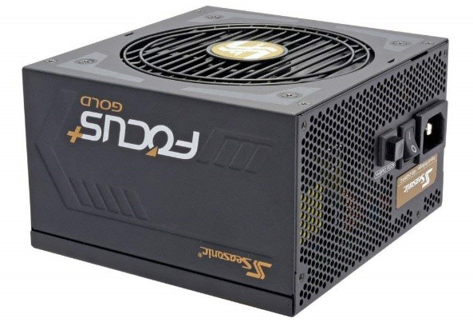

The case is what contains the internal components. The size, the shape, and the functionality of the case will usually heavily affect the type of PC you are building.
for example, an ATX case can be used for upright pc's/large pc's, BTX cases can be used to create smaller, more compact, PC's


×

There are several main components in a PC
The CPU, the GPU (or graphics card), the Motherboard, the case/chassey, the PSU (power supply), RAM, and the SSD/HDD. There is also the monitor, keyboard, mouse, and speakers, which are used to control and manage the PC software. I will also be recommending some personal favorite components that I think will be usefull if you're just starting to build PC's. I will include an image that you can use to see what my recommended components look like
What a case/chassey does and how to choose a good one
The case needs to be chosen in relation to your internal components. A case built for housing a BTX motherboard cannot be used for an ATX motherboard. This is a tradeoff that you will be making either way. The case also needs to be able to contain all of the components connected to the motherboard.
I recommend using a Thermaltake View 71

The reason why I recommend this large, ATX, case is because it is much easier to wire/connect components in a large case, a larger case means that, if you want to customize the pc in the future, you won't need to shift around too many componenents to do so. This case is Liquid Cooling Capable has Three 140mm Riing RGB Fan Pre-installed. 3 Year Warranty. Has clips instead of screws to fit any components, which saves time. It's tempered glass provides protection for all internal components from external sources other than dropping it. Assuming this tower is at an ATX standard, as advertised, it can support Mini ITX, Micro ATX, ATX and E-ATX Motherboards which means it is compatible with my recommended motherboard
What a CPU does and how to choose a good one:
The CPU is recognised as the brain of the PC. The CPU processes any information the Control Unit tells it to process. The CPU is comprised of many connected parts, the most important parts being the ALU (Arithmetic Logic Unit) which processes any logic, and mathematical, commands. The Instruction, and the Testing Registers, -the instruction register contains the instruction the CPU is currently executing, and the test register is used to hold the results of calculations performed by the CPU- and the clock, which is made of timing circuitry that measures the timing of tasks performed by the CPU in terms of clock cycles.
There are 2 main producers of CPU, AMD and Intel, which require you to have a socket in your motherboard that is compatible with one or the other. I recommend buying one with a high clock speed, measured in ghz, and depending on the use (gaming, work, design etc), about 6 Cores. Which means the CPU will have 12 Threads (these CPU's use hyper threading) which means this CPU can run many operations at once. If you are planning on doing many operations, or playing any operation heavy games, I recommend buying a CPU that is also unlocked which means you can increase the clock speed, making the CPU run faster than its base frequency. Personally, I recommend using the Intel Core i7-8700KM
It has 6 cores, and a max clock speed of 4.7ghz while overclocked. One downside is that it is compatible only with Motherboards based on Intel 300 Series Chipsets, which may limit its use
What a Motherboard does and how to choose a good one
Used as the base of every PC, the motherboard connects every component together. Every part of the computer is connected to the mother board in some way. The motherboard has slots for most components.
I recommend that the motherboard should have at least 2 RAM slots, 4 RAM slots is optimal. The mother board also requires slots for any GPU or video cards and preferably an SSD drive. The motherboard needs several USB slots and Speaker/Mic slots. The northbridge is a chipset that communicates with the CPU, controlling its interaction with the RAM and the PCIe slots (Graphics card). Bus speed (measured in MHz) is the speed of which information can travel around the motherboard, this is important because the faster a computer's bus speed, the faster it will operate. Keep in mind that a high bus speed does not make up for slow components. If you want a more detailed explanation I recommend reading How stuff works' article on bus speed
Personally, I recommend using the Gigabyte Z370 AORUS Gaming 5
This motherboard supports 8th generation intel CPU's, it has three m.2(SDD) slots, USB 3.1, which is backwards compatible with other USB's, and USBC slots.
What a GPU does and how to choose a good one:
The Graphics card is what renders graphics, it has it's own RAM, so it can render multiple things at once, and a processor chip called a GPU, which processes images. Some motherboards come with an integrated graphics chipo (IGP) which allows you to skip the graphics card all together. However, an IGP unit doesn't have its own RAM, so it utilizes the system's memory instead. For example if you have a computer with 4GB of RAM, the IGP can use between one and five percent of the available memory for graphics processing. This percentage varies depending on the size of task, because of this lack of dedicated RAM, these graphic chips are usually much slower than most dedicated (seperated) graphics cards.
A good Graphics card can render everything graphical you're monitor can display. This means a good Graphics card needs sufficient RAM (at least 2GB) and a powerful GPU.
However, if you just want a regular, non overkill, PC I recommend looking HERE because you can learn of many Graphic cards for many price points.
What a RAM does and how to choose a good one:
RAM is an acronym for Random Access Memory.
RAM cards are a volatile storage system used to manage any short term memories, not yet stored in the HDD/SSD. The reason why they are labeled as volatile is because RAM does not store information for very long. The reason why it does this is because RAM stores the information your computer is actively using (such as video games) so that it can be accessed immediately/quickly. The RAM processes any immediate actions, including games and other applications, before transferring these short term memories to the long term memory (HDD/SSD). Larger amounts of RAM allows a computer to work with more information at the same time, which usually effects total system performance.
RAM speed:
RAM is measured by how many cycles per second it can perform. For example, if RAM is rated at 3200 MHz, it performs 3200 cycles per second. RAM speed depends on CAS latency, or CL, this is the delay time of your RAM receiving a command and then being able to issue it. An example of this is 15-17-17-35. Those numbers indicate how many clock cycles it takes for the RAM to respond to the command. To find RAM speed, take your frequency and divide it by the first CAS number. 3200/14 = 228.58. This gives us how many instructions per second the RAM can carry out.
The main factor you should look at when looking for RAM is the number of GB (gigabytes) it has. This is important because the amount of RAM you have is equal to the amount of short term memory you can store. A larger RAM means the PC can multitask/carry out more operations at once.
For example, 8GB of RAM can carry out 8GB of operations at once. 16GB can carry out 16GB of operations at once etc.

What a PSU does and how to choose a good one:
PSU is an acronym for Power Supply Unit. There are three major kinds of power supplies you may find. Unregulated (also called brute force), linear regulated, and switching/fully modular.
The power supply that you buy depends on the computer's motherboard and housing size, meaning that you'll need to research your motherboard model to see which power supplies will fit.
A general rule of thumb is that your PSU needs to be able to power twice as much as your Graphics card.

With the motheroard I have chosen, I would recommend using the Seasonic FOCUS Plus 1000, it can supply enough power to power all of my recommended components at 1000W total.
What an SSD/HDD does and how to choose a good one:
The HDD (Hard Disc Drive) is used mainly for long term storage. A large HDD is less necessary to play online games, as most online content is stored on the cloud, but it is still necessary to store the games, and any applications. An SSD (Solid-state drive) is recommended for gaming computers due to its high running speed. I am including it next to the HHD because it is recommended to have both HDD and an SSD drive. The HDD is much cheaper than an SSD drive, if you cannot afford an SSD, which holds the same amount of information it just runs much quicker because it doesn't have moving parts (it has chips), the magnetic disc hard drive on its own is the next best alternative. If the SSD has sufficient memory, you don’t really need an HDD, but it's still recommended that you have one.
There are several things to look at when choosing and HDD or SSD. However, the main thing you should look at is it's storage capacity (as HDD's and SSD's sole purpose is storage). High quality HDD's can have from 500 GB to 15 Terrabytes of storage capacity. High end SSD's can have anywhere from 500 GB or 100 terrabytes

I personally recommend the Seagate Barracuda HDD and the Samsung 970 PRO 512GB SSD. They both have excellent storage and good price/performance ratios.
What cooling systems do and how to choose a good one:
There are two main types of cooling, used in usually two main areas (the case and the CPU), liquid and air cooling. Some cases, like my suggested Thermaltake View 71 has cooling pre-installed. Sometimes you need to install the case fan yourself.

My recommended CPU cooling system is the Thermaltake Floe Dual Riing RGB water cooling system. The reason why I recommend using water cooling is that when you overclock the CPU (while using my recommended Intel Core i7-8700KM CPU) having the overclocked CPU cooled will decrease the noise released by the CPU's RPM speed, minimilize heat damage to components, and increase RPM
However, having a CPU cooling system doesn't mean you shouldn't install case fans.